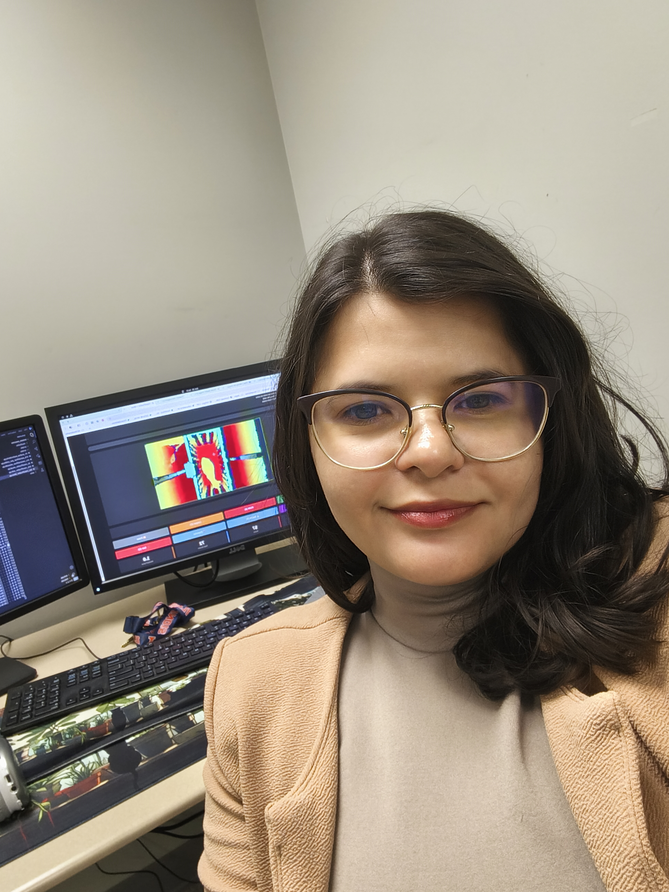

Data-Driven Animal Scientist · Researcher · Developer Zootecnista orientada por dados · Pesquisadora · Desenvolvedora
Precision Livestock Technology & Ruminant Nutrition Zootecnia de Precisão & Nutrição de Ruminantes

Who I am Quem sou
I am a data-driven animal scientist and faculty member at UESPI (Campus Corrente, Piauí, Brazil), currently pursuing my PhD at UNIVASF. I completed a visiting research period at the Animal Sciences Laboratory of the University of Illinois at Urbana-Champaign (UIUC), supported by CAPES/PDSE.
My research focuses on developing accessible precision livestock technologies — combining depth imaging, computer vision, machine learning, and ruminant nutrition — to support producers of all scales. I build open-source tools that make scientific methods more accessible to researchers and practitioners worldwide.
Sou zootecnista orientada por dados e docente da UESPI (Campus Corrente, Piauí), atualmente doutoranda na UNIVASF. Concluí um período de pesquisa no Animal Sciences Laboratory da Universidade de Illinois em Urbana-Champaign (UIUC), com apoio da CAPES/PDSE.
Minha pesquisa foca no desenvolvimento de tecnologias acessíveis de zootecnia de precisão — combinando imagens de profundidade, visão computacional, aprendizado de máquina e nutrição de ruminantes — para apoiar produtores de todos os portes. Desenvolvo ferramentas de código aberto para tornar métodos científicos mais acessíveis.
Research Interests Áreas de Interesse
Latest Recentes
As part of team Confusion_Matrix, we developed a livestock trough monitoring system using image analysis and data reliability indicators at the John Deere Technology Innovation Center (Center for Digital Agriculture, UIUC). The solution helps producers assess the confidence level of sensor data for better decision-making in animal production systems.
Como parte da equipe Confusion_Matrix, desenvolvemos um sistema de monitoramento de cochos utilizando análise de imagens e indicadores de confiabilidade de dados, realizado no John Deere Technology Innovation Center (Center for Digital Agriculture, UIUC). A solução auxilia produtores a avaliar o nível de confiança dos dados de sensores para melhores tomadas de decisão na produção animal.
Read full story Leia a matéria completaOpen Source Código Aberto
Web tool for measuring Longissimus dorsi muscle area (AOL) and subcutaneous fat thickness (EGS) from B-mode ultrasound images. Interactive annotation, pixel-to-cm calibration, and batch Excel export — no installation required.
Ferramenta web para medição da área de olho de lombo (AOL) e espessura de gordura subcutânea (EGS) em imagens de ultrassom modo-B. Anotação interativa, calibração pixel-cm e exportação em lote para Excel — sem instalação.
Python tool for extracting spot temperature measurements from FLIR radiometric JPEG images using the full Planck-based emissivity correction formula. Batch processing with Excel export.
Ferramenta Python para extração de spots de temperatura em imagens radiométricas FLIR (.jpg) com correção de emissividade pela fórmula de Planck. Processamento em lote e exportação para Excel.
Research Output Produção Científica